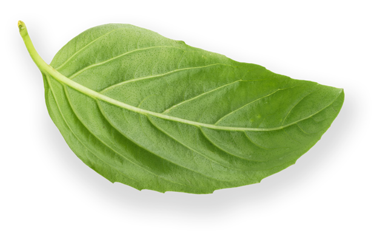
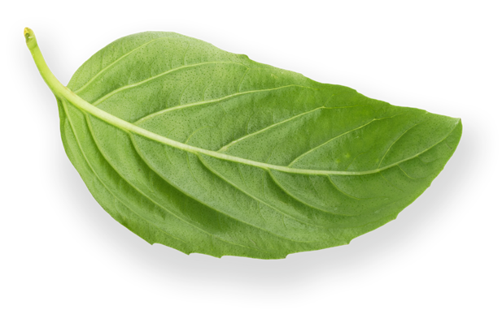

Why don't vegans eat honey?
September 02 2021,
Jelena Cvetković Š.
HONEY OR NOT HONEY? This is one of the common questions asked to vegans. It is known what beneficial properties honey has, but few people know how honey is made and how bees are exploited and abused.
What exactly is honey?
Honey is a sweet, nutritious and dense substance produced by bees. It is a source of energy for bees and without it they would not survive. It is also crucial for the quality of the whole bee swarm, because it serves as food for them to get all the necessary nutrition for a healthy life.
Bees as a factor in the survival of life
Bees feed on flower nectar or plant pollen. The bee's body is covered with hairs on which pollen is caught while they feed on the flower. In this way, they transfer pollen from the male part of the plant (stamen) to the female part of the plant (pistil) and help in pollinating the plants. Therefore, they are very important in nature for the emergence of new generations of plants. Pollination is also done by wind and some other types of butterflies, flies, moths… but the role of bees is still the greatest.

The extinction of bees would ultimately mean the extinction of most other living beings on our planet. I think that is already a big enough reason to keep the bees and leave them honey for which they work really hard. In any case, they help us to reproduce the plant world and thus enable the life of other living beings on Earth.
Did you know that…
-
bees have a highly developed level of communication and hierarchy in the hive? In each swarm there is a queen - the queen (around which the hive gathers) with other worker bees, scouts and nurses. Each group within the hive has its own role to play. Scout bees, for example, search flower areas for food and upon returning to the hive, perform a dance that conveys information related to the location of food (distance, quality and direction in relation to the hive).
-
they have an extra belly? The bee holds nectar in that stomach, which enzymes turn into honey. When it returns to the hive from the pasture, it vomits the contents from that stomach, which the other bees turn into the final product (honey) by further chewing and stores it in the honeycomb.
-
bees have a complex nervous system? It even makes them sensitive to pain.
-
one bee visits about 1,500 flowers to fill its stomach with honey?
-
one bee produces about 1/12 teaspoon of honey in its entire life (up to 6 weeks)? So, for one little spoon of honey 12 bees work all their lives.
-
the European Union the second largest producer of honey in the world and also the largest importer? China is on the first place in the production of honey. Each year, approximately 17 million bees produce 25,000 tons of honey.
Human (negative) impact on bee life
In one year, a bee swarm collects approximately 30 kg of honey. Beekeepers take honey from bees from hives, and replace it with sugar, which definitely has too few nutrients for healthy bee life.
30 kg
approximate amount of honey collected by a bee swarm in one year
The goal of conventional beekeepers is to earn as much money as possible at the expense of diligent bees. In the beekeeping industry, special types of bees are artificially bred to increase productivity. Such species of bees are more susceptible to diseases, which increases their possibility of more frequent mortality. Bee diseases are also spread by importing different types of bees into the hive from the outside, and thus spread to other insects that pollinate the same plants.
The queens live up to 5 years, but they are changed in the beekeeping industry every 2 years in order to increase productivity and earnings. In doing so, whole bee swarms are intentionally killed. It is even recommended to beekeepers to regularly change queens whose swarms are below the average in honey yield.
every 2 years
queen is killed and changed, because a bee swarm doesn't produce enough honey
In recent years, there has been a significant decline in the number and diversity of bees.
Methods of bee exploitation
Did you know that most queens are artificially inseminated? People have found a way to artificially and forcibly fertilize these small valuable creatures. If you are interested in this procedure in detail, you can watch the video here.
Beekeepers often cut off a part of one wing with queens so that they cannot fly. Thus, the queen cannot leave her hive if she wants to take her swarm to another place. This ensures that the beekeepers are forced to stay in one place. Wing pruning in organic beekeeping is otherwise prohibited.
When honey is confiscated, bees are often inadvertently injured or killed. In the beekeeping industry, we also know the deliberate destruction of bee swarms at the end of the year. This reduces the cost of wintering bees. Next season, they simply buy a new swarm that is artificially bred and that pays off more.
In addition to all that, probably the biggest threat to bees is actually the mass use of pesticides in agriculture. This has led to huge disputes in international courts between large corporations such as Monsanto or Bayer and environmental companies, and even the states themselves.
Alternatives to honey
Is it really necessary to take away food from someone who has been working for it all his life and to use them in any way, when there are so many products on the market today that can replace honey? With them, we can also bake and cook a variety of dishes or put them in drinks. The best alternatives are apple jam, agave syrup, coconut syrup, rice syrup and the like.
It is up to us to decide…
I think there are a lot of facts that show what damage is done to bees. The fact is that people do not really need honey to be healthy and satisfied, while bees are the basic and necessary food for a healthy life.
Photo credits:
iStockphoto